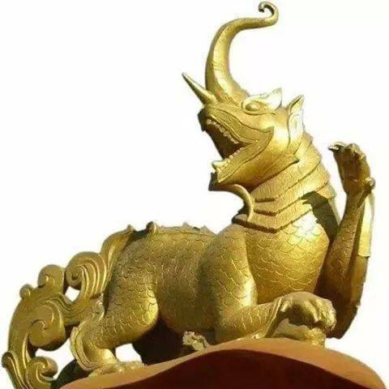

Nawarupa (Burmese: နဝရူပ, also spelt nawa rupa; Pali: navarūpa, lit. 'nine forms'), also known as byala (Arakanese: ဗျာလ or ဗျာလ္လ), is a chimeric creature found in Burmese and Rakhine (Arakanese) mythology.

“Byalah” Every race, every religion has his own mythical symbolizes, statues for a long time ago. The Rakhine (Arakan) also has his own mythical creature that is unknown not only in the world but also other religions in Myanmar. It can be found in ancient pagodas and other archeological buildings as ancient treasures. That mythical antelope has remained with Rakhine dynasty for a log time. The Rakhine (Arakan) called it “Byalah”. It is only one creature but made up of powerful nine animals’ parts. They are – 1)- Trunk of an elephants 2)- Eyes of a deer 3)- Horn of a rhinoceros 4)- Tongue of a parrot 5)- Body of the carp 6)- Tail of a peacock 7)- Ears of a horse 8)- Fangs of a tiger 9)- Paws of a lion It takes the powerful, strong components of the nine animals. The tongue of the parrot refers to articulation. The tail of the peacock means the beauty, the ears of the horse for good sense of hearing; the eyes of the deer are for sharpness of the sight and the horn of the rhinoceros, the fangs of the tiger, paws of a lion and trunk of an elephant are for great strength. The Rakhine believed that “Byalah” makes them strong and healthy and can avoid the disaster. It can firstly be found in religionist-building in Vesila age. There will be other different styles of “Byalah” in early of Vesila age. Byalah, the ancient creature of the Rakhine (Arakan) is placed to at ancient pagoda, temple and famous building as a nine powerful guardian.